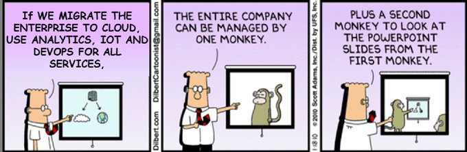

DevOps
- Introduction to Digital Business Transformation
- DevOps
- Blogs
- Xebia Labs and DevOps
- Netflix and DevOps
- Public Cloud DevOps
Introduction to Digital Business Transformation
DevOps
- Wikipedia: DevOps
- DevOps Toolbox: Jenkins, Ansible, Chef, Puppet, Vagrant, & SaltStack
- thenewstack.io: Kubernetes is the Accepted Platform for Cloud Native Computing
- opensource.com: The case for making the transition from sysadmin to DevOps engineer 🌟 There's a learning curve, but there's no time like the present to get started.
- opensource.com: The case for making the transition from sysadmin to DevOps engineer There's a learning curve, but there's no time like the present to get started.
- opensource.com: How to transition into a career as a DevOps engineer Whether you're a recent college graduate or a seasoned IT pro looking to advance your career, these tips can help you get hired as a DevOps engineer.
- opensource.com: A beginner's guide to everything DevOps 🌟 Take a fresh look at why DevOps is important, what it means for IT professionals, and its methods, frameworks, and tools.
- How to get from DevOps to NoOps: 5 steps
- Corporate culture complicates Kubernetes and container collaboration 🌟 'As the DevOps crew likes to say: containers won't fix your broken culture'
- mindtheproduct.com: The Product Managers’ Guide to Continuous Delivery and DevOps 🌟
- devopscube.com: Become A DevOps Engineer in 2020: A Comprehensive Guide 🌟
- How to be a great DevOps Engineer 🌟
- smartsheet.com: The Way of DevOps: A Primer on DevOps Principles and Practices
- dzone: Are You Stuck in the New DevOps Matrix From Hell? 🌟 See how Docker solved the matrix-from-hell problem, and how DevOps techniques can help avoid the config sprawl that comes with microservices.
- kenmugrage.com 🌟 DevOps: A culture where people, regardless of title or background, work together to imagine, develop, deploy and operate a system.
Blogs
Xebia Labs and DevOps
Netflix and DevOps
- Full Cycle Developers at Netflix — Operate What You Build
- Applying Netflix DevOps Patterns to Windows
Public Cloud DevOps
AWS DevOps
Azure DevOps
Google Cloud Platform
- cloud.google.com: DevOps
- Cloud Developer Tools
- Google Cloud Code
- Google Cloud Build
- medium.com/google-cloud/tagged/devops


